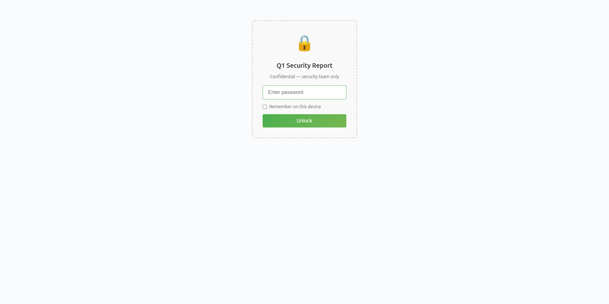
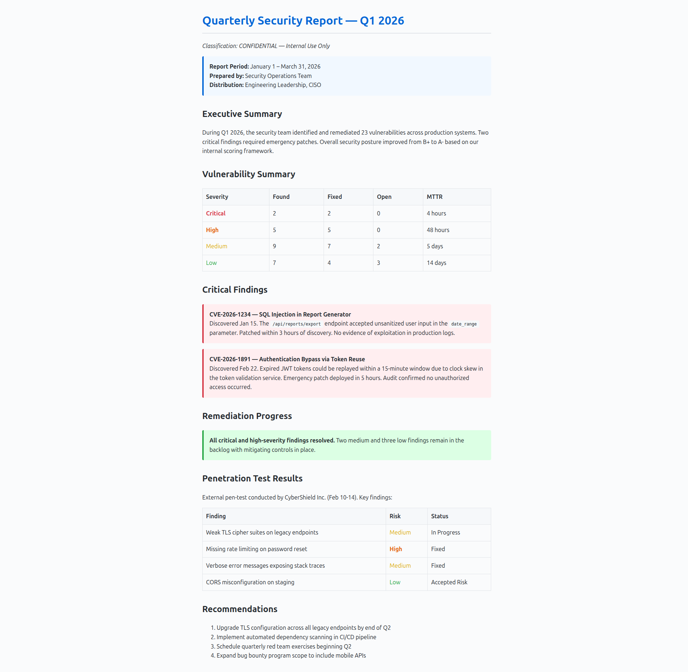
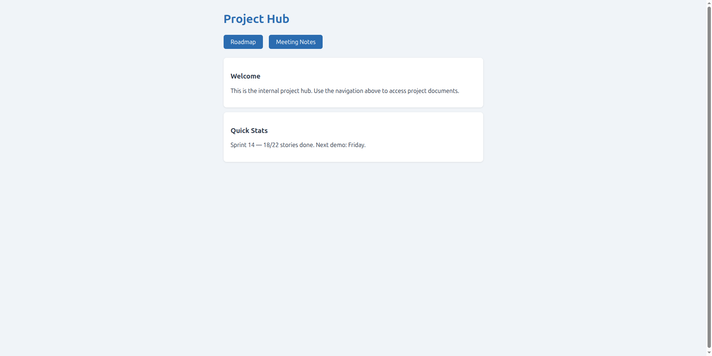
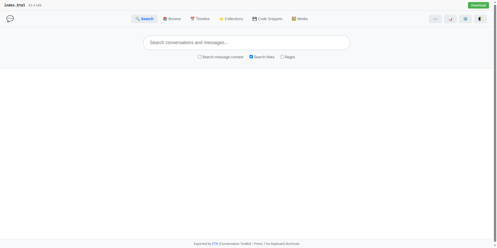

HTML is an encryption container format. That sounds wrong, but think about what an HTML file can hold: arbitrary data in script tags or data attributes, a full programming runtime via JavaScript, and a rendering engine (the browser) on every device on the planet. If you embed encrypted data and the code to decrypt it, the result is a file that looks inert until someone types the right password.
pagevault takes this idea seriously. It encrypts files, documents, images, entire websites, into self-contained HTML pages that decrypt in the browser. No backend. No JavaScript crypto libraries. The browser already has AES-256-GCM built in via the Web Crypto API. pagevault just has to match the parameters exactly on the Python side and embed the right 200 lines of JavaScript.
The output is a single .html file. You can email it, put it on a USB stick, host it on GitHub Pages, or double-click it on your desktop. It doesn’t phone home, it doesn’t load CDNs, it doesn’t need anything except a browser.
What Goes In
Anything.
pagevault lock report.pdf # PDF with embedded viewer
pagevault lock photo.jpg # image with click-to-zoom
pagevault lock notes.md # markdown, rendered or source view
pagevault lock recording.mp3 # audio player
pagevault lock mysite/ --site # entire multi-page website
pagevault lock page.html # HTML with selective region encryption
Every output is a single .html file containing the ciphertext, a password prompt, the decryption runtime, and a viewer plugin for the content type. Seven viewers ship built-in: Image, PDF, HTML, Text (with line numbers), Markdown (with rendered/source toggle), Audio, and Video. They’re a plugin system, so you can add your own.
Here’s what it looks like. An encrypted security report:

After entering the password, the viewer renders the decrypted content with a toolbar:

For directories, --site bundles everything into a single encrypted HTML file. The directory is zipped with deflate compression, encrypted, and embedded. On the browser side, a minimal zip reader (no library, just the built-in DecompressionStream API) unpacks it after decryption. Internal links between pages work. CSS and images load from the zip. The whole site navigates inside an iframe as if it were served normally:

A 100 MB site compresses well if it’s mostly text and markup. The zip gets chunked and encrypted the same way single files do, so the same progress bar and memory management apply. I’ve tested sites with hundreds of files without issues.
The Crypto
Nothing exotic here. AES-256-GCM for authenticated encryption, PBKDF2-SHA256 with 310,000 iterations for key derivation, all through the browser’s Web Crypto API. The interesting part isn’t the cryptography. It’s making the container format work at scale.
Multi-user access uses CEK (content-encryption key) wrapping. A random key encrypts the data once. That key is then wrapped separately for each user’s derived key:
Content ──encrypt with CEK──> Ciphertext (one copy)
CEK ──wrap with Alice's key──> Key Blob A
CEK ──wrap with Bob's key────> Key Blob B
Adding a user wraps one small key blob. Removing a user deletes one blob. The bulk content stays untouched.
The Hard Part: Large Files
The basic approach (encrypt, base64-encode, embed in HTML) works fine for small files. The problems start when you try to encrypt an 84 MB conversation archive or a 179 MB HTML report.
The original v2 format had a compounding overhead problem. File bytes were base64-encoded (33% expansion), then encrypted, then the ciphertext was base64-encoded again (another 33%). That’s 1.33 * 1.33 = 1.77x total overhead. An 84 MB file produced a 198 MB HTML page. Wasteful, and slow to decrypt because the browser had to hold the entire blob in memory at once.
v3 fixes this with chunked encryption.
Eliminating the double base64
v2 encrypted a base64 string, then base64-encoded the result. Two layers. v3 encrypts the raw bytes directly and base64-encodes once. The metadata (filename, MIME type, size) is encrypted separately instead of being bundled into the content. This alone cuts the overhead from 77% to about 39%.
Chunked ciphertext
Instead of one giant encrypted blob, v3 splits content into 1 MB chunks. Each chunk is encrypted independently with AES-256-GCM using a counter-derived IV: the chunk index is XORed into the last four bytes of a base IV. Each chunk becomes its own <script> tag in the HTML:
<script id="pv-0" type="x-pv">base64-of-chunk-0...</script>
<script id="pv-1" type="x-pv">base64-of-chunk-1...</script>
...
<script id="pv-83" type="x-pv">base64-of-chunk-83...</script>
The browser decrypts them sequentially, showing a progress bar. After each chunk is decrypted, the corresponding script tag is removed from the DOM (el.remove()), freeing the base64 text for garbage collection. Memory usage stays proportional to the chunk size, not the file size.
The numbers
That 84 MB conversation archive: v2 produced 198 MB. v3 produces 117 MB. A 41% reduction, and the decryption doesn’t choke the browser.
Here’s the 84 MB file after decryption, rendered as a searchable conversation interface:

I’ve also tested a 315 MB text file (works, slow to load) and a 179 MB HTML file with 1.5 million DOM elements (DOM rendering is the bottleneck there, not decryption). These are probably past the point of reason for an HTML container, but it’s nice to know where the limits actually are.
Region Encryption
pagevault also handles a more specific case: encrypting parts of an HTML page while leaving the rest public. You mark sections with <pagevault> tags and only those become ciphertext. Public navigation, styling, scripts, all untouched. Useful for dashboards where some metrics are public and others aren’t, or documentation with confidential sections.
The lock operation is composable: its output is valid input. You can encrypt a page for Alice, then encrypt different sections for Bob. The page round-trips cleanly through multiple passes.
The file:// Problem
One thing that surprised me. Encrypted HTML files opened from the filesystem (file:// URLs) behave differently than files served over HTTP. The file:// protocol gives pages an opaque null origin, which breaks localStorage (so “remember on this device” doesn’t work) and blocks nested blob URLs (so the HTML viewer can’t create iframes the normal way).
The fix was srcdoc iframes, which inherit the parent’s origin, plus a pushState shim for the URL bar. Not glamorous, but it means encrypted files work identically whether you double-click them on your desktop or serve them from a CDN.
There’s also a built-in dev server for when you want HTTP without the hassle:
pagevault serve _locked/ --open # HTTP server on localhost:8765
Related: cryptoid
For a narrower use case, I also built cryptoid. It encrypts Hugo markdown at build time using the same crypto core. Encrypted posts are still full Hugo citizens (taxonomies, RSS, related posts all work). If you have a Hugo blog and just need some posts behind a password, cryptoid is simpler. pagevault is for everything else.
Try It
pip install pagevault
pagevault lock report.pdf # wrap any file
pagevault lock mysite/ --site # bundle a whole site
pagevault lock page.html -s ".private" # encrypt specific CSS selectors
pagevault serve _locked/ --open # preview locally
GitHub. MIT license. 667 tests. Dark mode follows your OS setting. Handles files larger than most people would think to put in an HTML page.
Static sites shouldn’t need backends just because some content needs a password.
Discussion